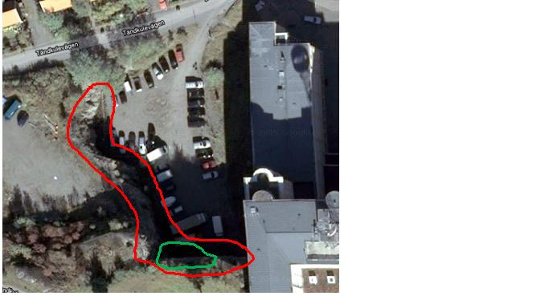

Klippan vid Nacka Strand är väldigt lös till sin karaktär varför det finns vissa bestämmelser kring klättringen (se ledbeskrivningar) och att alla klättrare uppmanas till att säkra en bit ut från väggen och så klart använda hjälm! Stå gärna vid staketet till parkeringsplatsen. Just nu finns 3 leder utvecklade vid klippan. Dessa är färgmarkerade i olika färger och graderade, se nedan. Det finns två ankare som kan användas för topprepsklättring. Dessa tar man sig till genom att gå runt staketet som finns uppe på klippan. Fler leder kommer utvecklas efterhand och bultas fn är det bara topprepsklättring – men med det magra mixklättringsutbudet i Stockholm hoppas vi att detta är ett välkommet tillskott. Om någon önskar att utveckla fler leder eller har synpunkter på grader etc. kontakta antingen Jonas Klasson 070-226 89 44 eller Joakim Niklasson 0739-864199. Tändkulevägen med klippan inringad i rött. De leder som hittills har utvecklats finns i området markerat med grönt, och det är i det området som fastighetsägaren angett det som ok att klättra.
Kör till Tändkulevägen i Nacka. Parkera enligt gällande bestämmelser.
Som företrädare för fastighetsägaren Nacka Strand Fastighets AB godkänner vi att Stockholms Klätterklubb får nyttja bergväggen vid Tändkulevägen, se skiss ovan, för klättring under följande förutsättningar: Fastighetsägaren tar inget som helst ansvar för eventuella olyckor i samband med klättring, all klättring sker på egen risk Befintligt staket får varken klättras på eller över, ej heller användas för förankring av rep eller dylikt Fastsättning av bultar och ankare i bergväggen är OK men ska ske i begränsad omfattning Om skrotning av lösa stenar ska ske på bergväggen, ska nedfallande lösa stenar samlas ihop i högar utanför parkeringsytan Befintliga brandposter får under inga omständigheter användas för att spola vatten Stockholms Klätterklubb ansvarar för att meddela sina medlemmar ovanstående förutsättningar Om ovanstående förutsättningar ej följs är parterna överens om att rätten att nyttja bergväggen för klättring upphör med omedelbar verkan
Kategori:Stockholm
Category:Is
Copyright (C) Permission is granted to copy, distribute and/or modify this document under the terms of the GNU Free Documentation License, Version 1.3